DRUM RHYTHM GAMEなないろ
BUMP OF CHICKEN
♪=125
なないろ — BUMP OF CHICKEN⌄
TEMPO100%
80%100%120%
VOLUME60%
0%50%100%
準備完了・1,757 notes
最初のタップで音声を有効にします
1 / Soft Lens：厳密な物理計算なし。透明度・ぼかし・背景の拡大コピー・縁反射で「屈折しているように見せる」軽量案。

DRUM RHYTHM GAMEBUMP OF CHICKEN
準備完了・1,757 notes
最初のタップで音声を有効にします